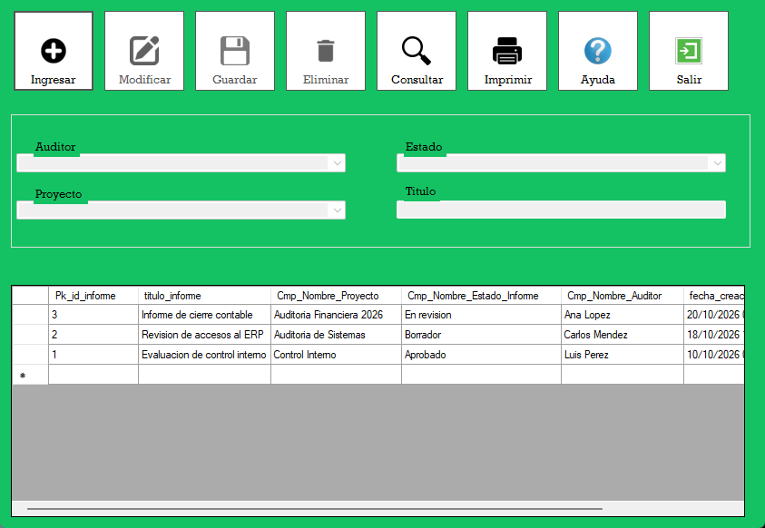
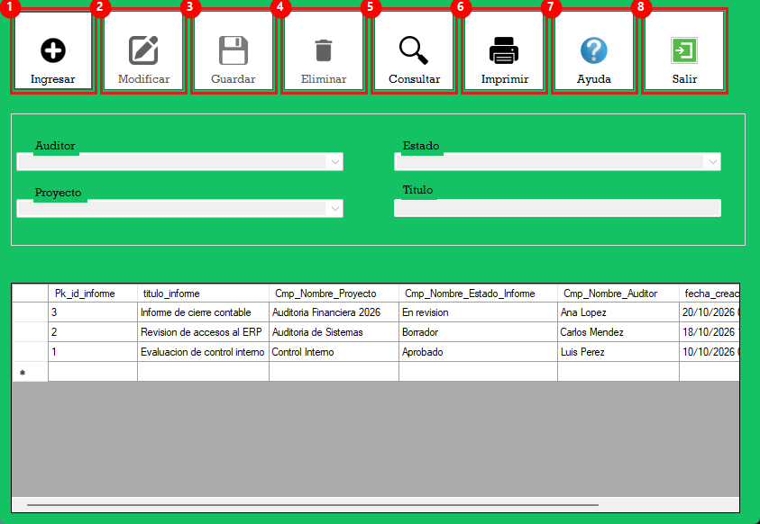
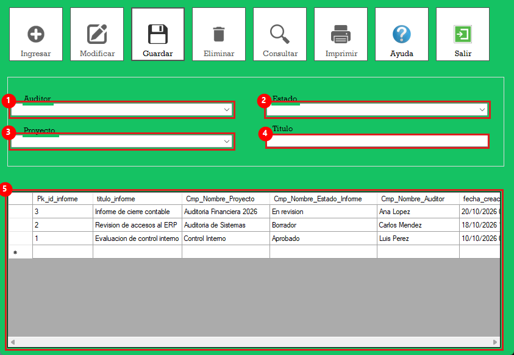
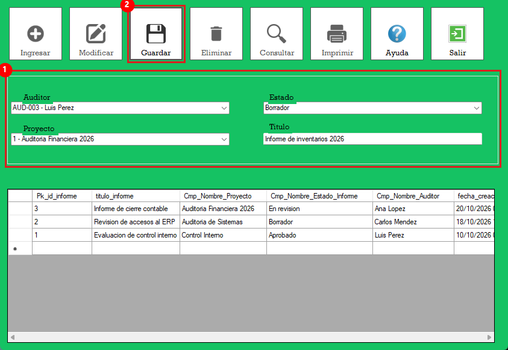
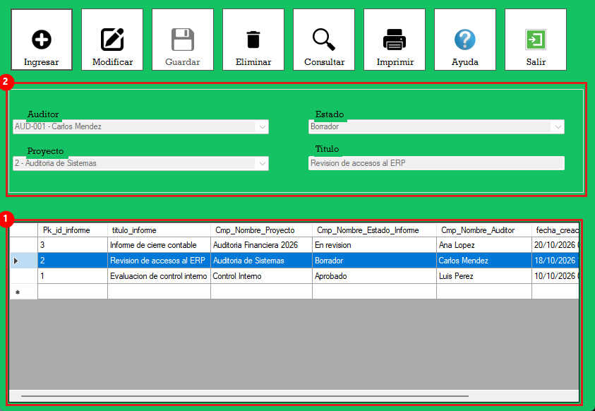
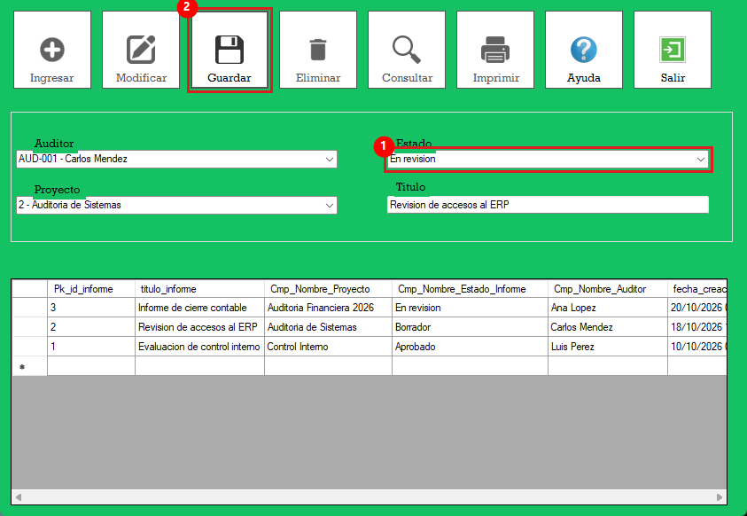
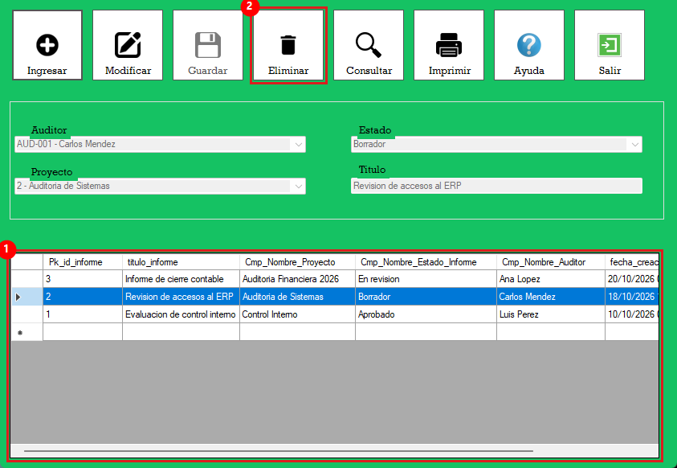
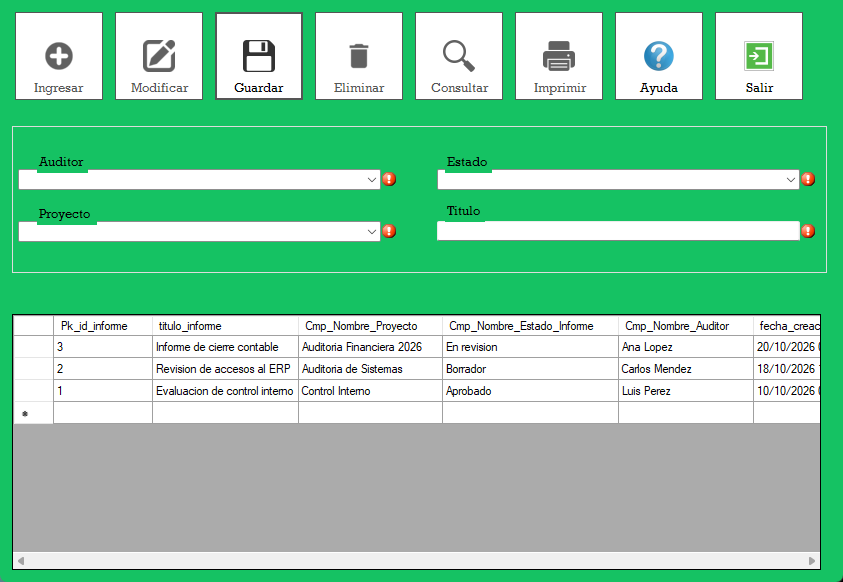

Sistema de Auditoría · Grupo 4 · Módulo de Informes
El formulario de Informes permite registrar y administrar los informes de auditoría. Cada informe tiene un título y está relacionado con un proyecto, un auditor responsable y un estado (por ejemplo: Borrador, En revisión o Aprobado).
Al abrir el formulario, el sistema verifica los permisos del usuario conectado y carga automáticamente la lista de informes registrados en la parte inferior.

Figura 1. Vista general del formulario de Informes (los datos mostrados son de ejemplo).
El formulario se divide en tres zonas:

Figura 2. Botones del formulario.
| N.º | Botón | Función |
|---|---|---|
| 1 | Ingresar | Limpia los campos y habilita el modo edición para registrar un informe nuevo. |
| 2 | Modificar | Habilita la edición del informe seleccionado en la tabla. Solo se activa cuando hay un informe seleccionado. |
| 3 | Guardar | Valida los datos y guarda el informe nuevo o los cambios del informe modificado. Solo se activa en modo edición. |
| 4 | Eliminar | Elimina el informe seleccionado (pide confirmación). El registro se conserva con estado Eliminado. |
| 5 | Consultar | Consulta los informes registrados. |
| 6 | Imprimir | Genera el reporte imprimible de los informes. |
| 7 | Ayuda | Abre esta ayuda. |
| 8 | Salir | Cierra el formulario de Informes. |

Figura 3. Campos del informe y tabla de registros.
| N.º | Campo | Descripción |
|---|---|---|
| 1 | Auditor | Lista desplegable con los auditores registrados (carné y nombre). Seleccione el auditor responsable del informe. Obligatorio. |
| 2 | Estado | Lista desplegable con los estados del informe (Borrador, En revisión, Aprobado, etc.). Obligatorio. |
| 3 | Proyecto | Lista desplegable con los proyectos de auditoría (código y nombre). Seleccione el proyecto al que pertenece el informe. Obligatorio. |
| 4 | Título | Nombre del informe. Obligatorio, máximo 150 caracteres. Acepta letras, números, espacios y los signos - _ . , : ; ( ) / # ° |
| 5 | Tabla de informes | Muestra todos los informes registrados, del más reciente al más antiguo, con su código, título, proyecto, estado, auditor, fecha de creación y fecha de última actualización. Al hacer clic en una fila se cargan sus datos en los campos. |

Figura 4. Informe nuevo con los datos llenos 1, listo para guardar 2.
Si los datos son correctos aparecerá el mensaje "Informe guardado correctamente.", el informe se agregará a la tabla, la acción quedará registrada en la bitácora y el formulario regresará al modo consulta.
Para modificar o eliminar un informe primero debe seleccionarlo:

Figura 5. Informe seleccionado y sus datos cargados en los campos.

Figura 6. Cambio del estado de un informe de "Borrador" a "En revisión".
Si se guardó correctamente aparecerá "Informe modificado correctamente." y la fecha de actualización del informe cambiará en la tabla. Si no realizó ningún cambio, el sistema le avisará que no se modificó el informe.

Figura 7. Informe seleccionado y botón Eliminar habilitado.
La lista de informes se carga automáticamente al abrir el formulario y se actualiza cada vez que guarda, modifica o elimina un informe. Use el botón Consultar para consultar los informes registrados.
El botón Imprimir genera el reporte de los informes para visualizarlo o imprimirlo. Solo está disponible en modo consulta y si su usuario tiene permiso de impresión.
Al presionar Guardar, el sistema revisa que todos los campos estén correctos. Si hay un error, aparece un ícono rojo junto al campo con problema. Coloque el puntero del mouse sobre el ícono para ver el detalle del error.

Figura 8. Campos con error al intentar guardar sin datos.
| Mensaje | Causa y solución |
|---|---|
| El campo nombre del informe es obligatorio. | No escribió el título. Escriba un título para el informe. |
| El nombre del informe no puede tener más de 150 caracteres. | El título es demasiado largo. Resúmalo. |
| El nombre del informe solo puede contener letras, números, espacios y los signos ... | El título tiene caracteres no permitidos (por ejemplo @ $ % & * !). Quítelos. |
| Seleccione un auditor. / Seleccione un estado del informe. / Seleccione un proyecto. | Falta seleccionar un valor en la lista desplegable indicada. |
| Seleccione un informe de la lista para modificar / eliminar. | Presionó Modificar o Eliminar sin seleccionar un informe. Haga clic en una fila de la tabla. |
| El proyecto, estado o auditor seleccionado ya no existe. | El registro fue eliminado por otro usuario. Cierre y vuelva a abrir el formulario para recargar las listas. |
| Ya existe un informe con esos datos. | Está intentando registrar un informe duplicado. |
| El informe ya estaba eliminado o no existe. | El informe ya tenía estado Eliminado. |
| No existe el estado "Eliminado" en tbl_estado_informe. | Falta registrar el estado Eliminado en el catálogo. Contacte al administrador. |
| Error al cargar proyectos / auditores / estados de informe. | No hay conexión con la base de datos. Verifique la conexión e intente de nuevo. |
Las acciones disponibles dependen de los permisos asignados a su usuario o perfil en el componente de Seguridad para la aplicación Informes:
| Permiso | Habilita |
|---|---|
| Ingresar | Botón Ingresar |
| Consultar | Botón Consultar y la carga de la tabla de informes |
| Modificar | Botón Modificar |
| Eliminar | Botón Eliminar |
| Imprimir | Botón Imprimir |
Si su usuario no tiene ningún permiso para esta aplicación, aparecerá el mensaje "El usuario no tiene permisos asignados para esta aplicación." y el formulario no se abrirá.
Todas las operaciones de guardar, modificar y eliminar quedan registradas en la bitácora con el usuario que las realizó.
El formulario está en modo consulta. Presione Ingresar para crear un informe o seleccione uno y presione Modificar.
No hay un informe seleccionado o su usuario no tiene ese permiso. Haga clic en una fila de la tabla.
Está ingresando o modificando un informe. Presione Guardar para terminar.
Cierre el formulario con Salir sin guardar; los cambios no guardados se descartan.
Sí. El informe se conserva en la base de datos con estado Eliminado; un usuario con permiso de modificar puede seleccionarlo y cambiarle el estado.